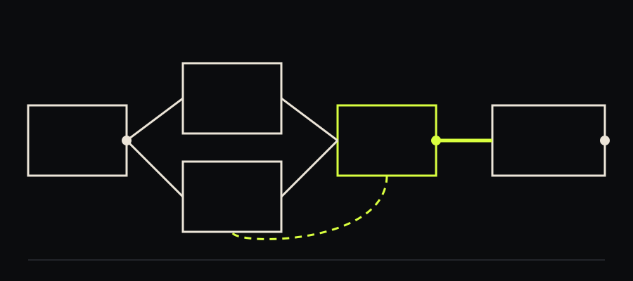

The studio
Two rooms, one signal path.
The label and the studio are the same address. Records are written in one room, recorded in the other, and cut without leaving the building.
Overtone is an illustrative label written for this template. The catalogue numbers, titles, formats, dates and track lengths are examples rather than real records, and the site carries no audio.
How a record gets made here
01 Bring the piece in finished
Sessions start from something that already works in a room. Arrangement happens before the first session rather than during it.
02 Record the whole take
Parts are played through. Where an edit is needed it is made at a bar line, not inside a phrase.
03 Mix on the console
The mix is a set of moves made in one pass, with the fades written down so a second pass can repeat them.
04 Cut and leave it
The lacquer is cut at half speed from the tape. Nothing is raised afterwards to match another record.
The signal pathDrawn, not photographed
Microphone to lacquer, with one loop.
The dotted return is the only place a signal goes backward: the room send that puts the second room into the first.

The rooms
Two rooms and a cutting bench. Both rooms are bookable by the day, including for records the label is not releasing.
Room A
The live room. High ceiling, wooden floor, one dead corner for close work. Big enough for a group playing together.
Room B
The mix room. Console, tape machine, and a pair of speakers that have not moved in years.
The bench
Where lacquers are cut and sleeves are printed. One colour at a time, which is why the sleeves look the way they do.
ContactOne address
Write, and say which room you mean.
Demos, pressing questions and room bookings all reach the same place. There is no form on this site and nothing here is sent anywhere.
The address above is an example. Replace it with your own before publishing.